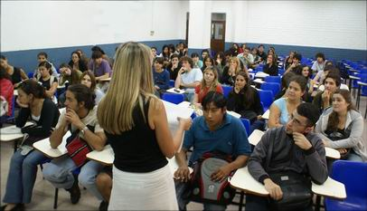

NO ME SALEN
APUNTES Y PROBLEMAS RESUELTOS DE FÍSICA Y BIOFÍSICA DEL CBC
|
|

Advertencia sobre defecto de tipeo en
No me salen |
Qué es NO ME SALEN
Este es un sitio gratuito de ejercicios resueltos, básicamente de las guías de problemas de los cursos de Física y de Biofísica (*) del Ciclo Básico Común (CBC) de la Universidad de Buenos Aires, Argentina. Los enunciados de los problemas fueron transcriptos con la autorización de los autores. Para mí es un placer hacerlos; espero que te sirvan.
Si se te ocurren comentarios o encontrás errores, por favor, no dejes de escribirme.
Historia de NO ME SALEN
Hace tiempo, mucho tiempo, unos chicos del Centro de Estudiantes de Exactas me propusieron escribir la guía de problemas resueltos para Física del CBC. Me gustó la propuesta sólo por poner a prueba mi propio estilo de resolver los ejercicios que -según me parecía- era bastante original. Habré resuelto unos 20 o 25 ejercicios (todavía se pueden encontrar algunos dibujos de aquellos originales en este sitio), pero nunca salieron a la venta y fue una pena porque iban a salir al costo de impresión.
Siempre bregué porque el material para consulta (guías de problemas -resueltos o propuestos-) que los docentes quisieran elaborar y poner a disposición de sus estudiantes debía ser gratuito o, por lo menos, distribuido al costo. Y que no debía generar ganancias ni derechos de autor. La opinión contraria es respetable y existen argumentos honestos que justifican las regalías. |
|  |
Fotografía: Cecilia Sobico |
Sin embargo, con el advenimiento de INTERNET encontré nuevamente la oportunidad de poner a disposición de los estudiantes este material de estudio que yo considero útil y didáctico. Me consta que un buen número de alumnos es comprador de materiales de estudio como ejercicios resueltos, ejercicios adicionales, ejercicios propuestos, apuntes teóricos, compilados de exámenes, etc. Y me duele que la posibilidad de compra no sea equitativa para todos. Esto me dio más impulso a trabajar este proyecto, que me reporta enormes satisfacciones.
En el 2010 la editorial universitaria EUDEBA me propuso editar los No me salen en papel en dos libros de texto. Acepté con la condición de que la versión on-line siguiese estando disponible en forma gratuita para todo público, abierta a la corrección y ampliación permanente. Acordamos de maravilla.
|
|
 |
Fotografía: Cecilia Sobico
|
Quiero aclarar mi posición sobre los apuntes teóricos: los estudiantes no deben pretender -siquiera- reemplazar el estudio con textos por apuntes. En los primeros encontrarán la sabiduría necesaria para afrontar los exámenes. En los segundos podrán buscar anécdotas, conexiones, advertencias, aclaraciones, destacados, jerarquizaciones... y toda una buena gama de ayudas y guiños que, en definitiva, predisponen para un abordaje más ameno, más familiar, más ubicado y mejor motivado de los textos de calidad, a veces áridos y espinosos.
De la mano de mis apuntes teóricos llegaron los ejercicios resueltos de BIOFÍSICA, que terminé incluyéndolos para darle una continuidad al discurso de los apuntes. En definitiva, la historia es un poco ésta y el futuro nadie lo sabe. Por lo pronto, espero que te sea útil: NO ME SALEN está para servirte. |
 |
|
|
| |
| Algunos derechos reservados.
Se permite su reproducción citando la fuente. Última actualización nov-13. Buenos Aires, Argentina. |
|
| | | | |
| | | | |
| | | | |
|